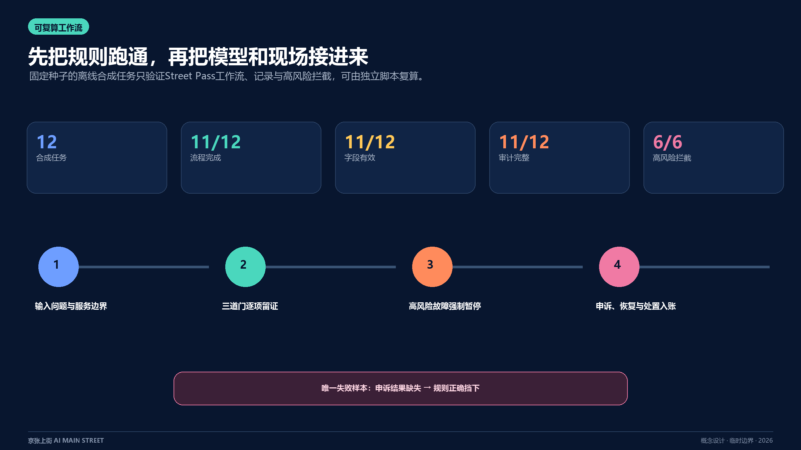

AI MAIN STREET / FINAL SUBMISSION
京张上街｜一条路、三道门、一本公共账
让AI服务经过真实城市的安全、理解与首用检验，再决定是否扩展。
第一件可被接手的事

一项服务的上街路径

总体空间结构

规划衔接

三处重点区

可复算工作流

指标与证据索引

实施路线

证据索引
总览地图三层范围重点区域用地分区交通慢行蓝绿公共空间建筑更新项目AI 场景核心指标任务覆盖自检状态来源假设
AI MAIN STREET / FINAL SUBMISSION
让AI服务经过真实城市的安全、理解与首用检验，再决定是否扩展。
